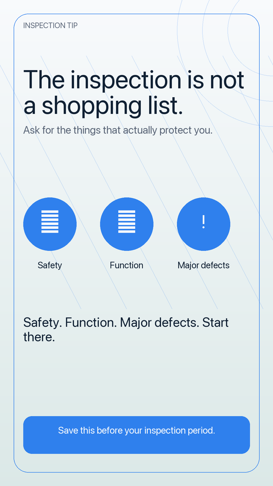

Only lessons that make sense outside the brokerage training room.
SOCIAL ASSETS
Agent-ready marketing ideas with room to review, refine, and choose.
This page gives the social content its own workspace instead of crowding the dashboard. Browse client-friendly post concepts, preview the vertical creative, and review the caption, carousel, and newsletter angles side by side.


CONTENT LIBRARY
Choose a social asset concept.
Each concept starts from a practical training lesson and turns it into public-facing education an agent could adapt for their own audience.
ASSET PREVIEW
Agent social content package
Select a topic to preview the post package.